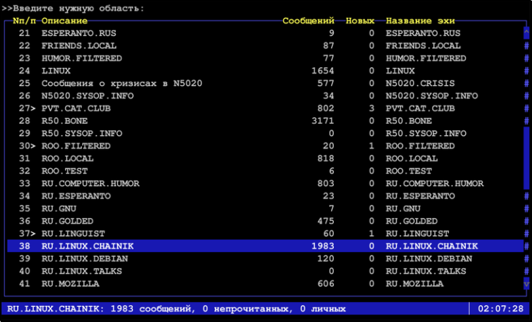

Закрыть гештальт наглухо
Сегодня одна моя хорошая знакомая написала мне, что хочет "закрыть гештальт" и приобрести себе мотоцикл, просила рассказать, что ей лучше знать до воплощения этой идеи в жизнь. Я вспомнил себя лет шесть тому назад и то, как я закрывал свой аналогичный гештальт, и к чему это привело в итоге. Да, возможно, я имею довольно специфические взгляды на авто и мото, чтобы давать кому-либо советы, но с другой стороны это и хорошо, это покажет другую сторону, точнее, попытаюсь показать обе. Подобные вопросы мне задавали и раньше и судя по характеру вопросов, владение мотоциклом представляется людям чем-то исключительно романтическим. Они видят этот образ, представляют, как они будут ездить на работу и обратно, как будут уезжать в закат и... И всë собственно. Никаких сложностей, никаких проблем, никаких неудобств. Ладно, начнëм с хоршего, закончим всем остальным.
Теги: moto
Вдогонку про качество
Прошло чуть менее двух недель с того момента, когда у меня было зарегистрировано резкое повышение температуры нижней чакры в отношении качества и надёжности продукции Apple. Не могу сказать, что с тех пор утекло много воды, но за это время на маке одного из наших разработчиков батарея превратилась в подушку и выгнула алюминиевую нижнюю крышку корпуса. Да, я понимаю, это старая добрая традиция в отношении макбуков про, но этот был выпущен в середине 2014-го года, то есть, прошло около 4-х лет. Мы не стали дожидаться, пока батарея выдавит тачпад наружу и отрутили бОльшую часть болтов на нижней крышке, остальные просто ослабив. Самое замечательное, что когда-то разъём зарядки в макбуках (mac safe) изменился. Какой в этом был таинственный глубокий смысл - я решительно не понимаю! В итоге, для новых зарядных устройств есть разъём-адаптер для старых макбуков, который стОит чуть менее 900 рублей (при этом за 1100 рублей на али можно купить целое зарядное устройство для макбука, правда на 60 ватт, но всё-же). Оригинальное зарядное устройство для макбука в каком-нибудь свзяном, стоит около 5,5 тысяч рублей. Блок питания для какого-нибудь ноутбука самсунг на 90 ватт там же стоит до тысячи рублей. Мне вот интересно, зарядное устройство Apple какие-то другие, особые вольты и амперы выдаёт? Из него выходит особый, премиальный ток? Или неодимовый магнит в разъёме добывается вручную лесными эльфами?
Теги: mac
Счастье - это логично
 Не так давно я начал читать книгу Марка Менсона "Тонкое искусство пофигизма". Отчасти банально, отчасти заставляет задуматься. Есть множество прописных истин, которые всем известны, но в то же время настолько избиты, что мы им не следуем или вообще не воспринимаем их, как что-то, что стоит у тебя навиду на полке шкафа уже много лет и превратилось из самостоятельного объекта в некий неотъемлимый элемент интерьера. Похоже, что эта книга - попытка ткнуть нас носом в несколько таких прописных истин, заставить достать их с полки, стряхнуть с них пыть и задуматься - зачем они вообще нужны и что из себя представляют.
Не так давно я начал читать книгу Марка Менсона "Тонкое искусство пофигизма". Отчасти банально, отчасти заставляет задуматься. Есть множество прописных истин, которые всем известны, но в то же время настолько избиты, что мы им не следуем или вообще не воспринимаем их, как что-то, что стоит у тебя навиду на полке шкафа уже много лет и превратилось из самостоятельного объекта в некий неотъемлимый элемент интерьера. Похоже, что эта книга - попытка ткнуть нас носом в несколько таких прописных истин, заставить достать их с полки, стряхнуть с них пыть и задуматься - зачем они вообще нужны и что из себя представляют.
Как и большинство вещей в этом мире, более сложные идеи можно разложить на более простые для понимания постулаты. Конечно, неплохо было бы сначала дочитать книгу до конца, а затем делать какие-то выводы, но кто мне помешает выкладывать в собственном блоге то, что мне приходит в голову по мере поглощения какой-либо информации?
Итак, на текущий момент вот несколько основных идей. Скажем так - краткое изложение пятой части.
Основная идея достаточно проста: умейте осмысленно подходить к тому, что вы считаете для себя по-настоящему важным и то, на что стОит тратить свои нервы и душевные ресурсы, а на что можно плевать с высокой колокольни.
Вторая идея - находясь в обществе потребления, наше сознание формируется таким образом, что на сознательном или подсознательном уровне мы считаем, что наша жизнь станет лучше, если в ней появится что-то новое, чего у нас нет - новая машина, новая работа, новые отношения, но на самом деле это в большинстве случаев не так.
Третья идея заключается в том, что наша жизнь - это череда больших и малых физических и душевных страданий. Эти страдания так или иначе неизбежны, но то, насколько легко мы их переносим, зависит исключительно от нас. Боль полезна и закономерна - она является нашим защитником от повторения негативного опыта, страдания заставляют нас развиваться и эволюционировать. Если в нашей жизни нет каких-то серьёзных проблем, то их место займут проблемы, придуманные нами и для нас важным станет то, что на самом деле яйца выеденного не стОит. Мы так устроены, что без страданий мы не можем.
Теги: мысли-вслух, книги
Ready for production
- Ты видишь контейнер?
- Вижу.
- И я вижу. А его нет!
Достаточно давно я заметил где-то фразу о том, что "docker is ready for production". С тех пор периодически вспоминаю её, каждый раз, когда сталкиваюсь с какими-либо проблемами разного масштаба, связанными с докером. Не поймите меня неправильно, мне нравится эта технология, но для меня странным остаётся тот набор детских заболеваний, которыми этот продукт страдает во вполне зрелом возрасте. Так же не понимаю этого дикого ажиотажа вокруг именно докера, когда всё что нужно и не нужно, пытаются затолкнуть в контейнер, не взирая на то, насколько это удобно и целесообразно в текущей ситуации. Создаётся впечатление, что во-первых, раньше не было никакой контейнеризации в принципе - ни jails на BSD, ни OpenVZ и LXC на линуксе, а во-вторых - и сейчас нет никаких иных технологий, кроме докера - ни snap/flatpack (да-да, иксовые приложения для десктопа тоже пытаются завернуть в докер), ни virtualenv для пайтона - ничего подобного, ни пакетов, ни средств вроде puppet/ansible. Конечно, у докера есть удобные средства доставки, с этим никто не спорит, но не понятно, почему выстрелил в своё время именно он, что его сделало таким "модным, стильным, молодёжным". Скажем, OpenVZ мне нравился откровенно больше, чем LXC, но и тем и другим я пользовался задолго до того, как появился докер. Что помешало обрасти средствами доставки и прочими плюшечками тому же OpenVZ? Отсутствие нативной поддержки в ядре?
Про минималистичный минимализм
!LIGHTWEIGHT!
Теги: fun, minimalism
Малышам о минералах
Так называлась одна из любимых книг моего детства. После неё я ещё несколько лет собирал по песочницам разные камни, коих у меня была целая коллекция. Она, как и многое другое, благополучно канула в лету. Но это так, лирическое отступление.
У нас было две версии руби из репозитория, 75 гемм, 2 версии thin сервера, ящик циклических зависимостей, пара попыток поставить отдельный environment и куча разных конфигов всех сортов и расцветок. Не то, чтобы этого было достаточно для того, чтобы поднять проект, но если связался с руби, уже трудно остановиться. Единственное, что вызывает у меня опасения - это пакеты из стока дистрибутива. Нет ничего более беспомощного, безответственного и испорченного, чем руби окружение, поставленное из стока, с установленными поверх геммами. Я знал, что рано или поздно мы перейдём на эту дрянь.
Примерно так год назад выглядел мой отчёт начальнику на его вопрос - "как там у нас с переездом редмайна на свежее окружение?"
Протрите призму восприятия, это расширит кругозор


Не так давно в MacOS X с одним из обновлений приехала тёмная тема оформления. Ну тема и тема - подумалось мне - что ж в этом такого удивительного? Под тот же линукс тем оформления окон а-ля MacOS X, только в тёмном варианте вагон и маленькая тележка уже много лет, под винду думаю, тоже можно найти, если поискать. Ан нет, на некоторых форумах, в социальных сетях и на ютубе периодически встречаю посты пользователей MacOS, просто пропитанные восхищением этой тёмной темой. Похоже, тысячи людей неудержимо писают кипятком в связи с этим и я никак не мог понять, почему. В одном из постов я обнаружил фразу следующего вида: "это то, чего мы все так долго ждали". Как-то не соответствует такая бурная реакция значимости события, вы не находите? И с того самого момента мне казалось, что что-то мне эта ситуация напоминает, но я не мог вспомнить, что именно. Сегодня внезапно вспомнил. Цитата с башорга:
- Мне так нравится 10ка, там такая офигенная фича, можно делать виртуальные рабочие столы и на одном держать одни приложения, на другом другие, когда твой говнолинукс так сможет?
- М... Ну лет двадцать назад, где-то.
Вот, с восторгами о тёмной теме в MacOS примерно как-то так же. Ещё в этот список можно отнести например, магазин приложений в Win10, установку убунты в окружение Win (проекту WinE, использующемуся для симметричных целей в линуксе уже чёрт знает сколько лет). Думаю, если покопаться, то можно найти и ещё примеры. И каждый раз, когда какая-то привычная для тебя вещь приходит на другую платформу, подаётся это всё с такой помпой, будто её заново для этого изобрели. По крайней мере пользователи воспринимают это именно так и свято в это верят. Примерно как Американцы в исключительность своей нации - изнутри может быть оно так и выглядит, но снаружи это смешно. Почему-то по умолчанию человек считает операционную систему, которой он пользуется - лучшей. Не лучшей для него конкретно, а просто лучшей в принципе. Люди живут в рамках одной платформы, как в домике. Зачем пробовать что-то иное, если ты уже пользуешься лучшим из того, что изобрело человечество? Откуда и из каких углов сознания появляется это мнение об исключительности того, чем ты пользуешься? На что ещё оно распространяется при таком подходе? Где здоровое любопытство из разряда "а что там, за углом"? Гугл изобрёл андроид (привет тебе, Энди Рубин), Apple изобрела MaxOS (привет всем BSD системам), а дядя Гейтс изобрёл интерфейс Windows (привет фирме Xerox). Почему меня это всё так раздражает? Не знаю, наверное, по той же причине, по которой меня раздражают грамматические ошибки - не люблю невежество. В то же самое время я отдаю себе отчёт в том, что я во множестве других сфер такой же, если не бОльший невежда и наверное, кого-то это тоже очень раздражает. А возможно и то, что я излагаю сейчас, будет раздражать меня в будущем примитивностью формы и содержания - вполне вероятно.
Теги: linux, windows, macos, мысли-вслух
Воспоминания о фидо или "меня зовут 2:/5054:74.20"

Если оглянуться назад и попытаться ответить на вопрос, по какому периоду своей жизни я тоскую больше всего и в какой период прошлого я хотел бы отправиться на денёк-другой в гости, то наверное это будет примерно второй-третий курс университета. Почему именно туда? Множество новых знакомых, первая работа, первые отношения, погружение в программирование и linux, появление первых телефонов, корявые ява-приложения, подключение витухи на 64к, посиделки с друзьями, дни рождения, записи песен, дача, сборка сервера внутри дивана, и отдельным пунктом - фидо. Фидо - это удивительное явление. Если бы не было фидо, на интернет я бы смотрел совершенно другими глазами. Сейчас интернет через призму моего восприятия представляет из себя огромную такую помойку, долину мусорных куч, среди которых где-то на горизонте высятся небоскрёбы больших корпораций - гугла, яндекса, IBM, огромные грязные мегалиты коммуналок "Вконтакте" и Facebook, обветшалый LiveJournal, с доброй половиной заколоченных окон, дом престарелых "Одноклассники"... И в тени этих живых и доживающих огромных и не очень зданий, копаются в мусорных кучах бобики. Огромное количество бобиков в бессчётном количестве куч. Кто-то радостно похрюкивая кушает какашки, кто-то эти какашки воспроизводит в комментариях, кто-то пытается найти ценную и косточку той или иной степени свежести. У кого нюх получше - те находят то, что искали, остальные плещутся в отходах, обмазанные рекламой казино, курсов игры на форексе и предложением купить настоящий айфон за полцены.
Теги: fido, ностальгия
Про необходимость выдохновения
Все мы знаем, что такое вдохновение. Это очень полезное состояние и наверное, самые лучшие изобретения и произведения искусства были созданы под влиянием этого состояния. Но что делать, если это замечательное состояние захватывает нас целиком и полностью и не может отпустить на протяжении дней, недель, месяцев? Когда желание творить и созидать сталкивается с банальной нехваткой сил и времени? Когда твоё сознание хочет что-то сделать, а весь остальной организм находится в состоянии "с меня хватит"? И ведь самое обидное, что самые интересные идеи приходят именно тогда, когда необходимо ложиться спать. Засыпает город, просыпается мозг. Ты лежишь в темноте под одеялом, тебе тепло, хорошо, но в голове у тебя ворочаются шестерёнки мыслей, сталкиваются друг с другом, рождают новые идеи. И с одной стороны тебе жаль их забыть, а с другой ты понимаешь, что если ты встанешь, чтобы их записать, то не уснёшь ещё несколько часов, а то и не уснёшь вообще в эту ночь. Периодически мне нужно выдохновение, выключатель, палка в колёса шестерёнок моего разума, но панацеи к сожалению, не существует. Хотя есть несколько успешных и не очень методов борьбы с собой, которыми я могу поделиться.
Веб-сервер одним файлом на шелле в 24 килобайта с шахматами и поэтессами

Когда я начинал вести этот блог, у меня было стойкое ощущение, что писать мне будет не о чем, но снова и снова я нахожу какие-то интересные вещи, которыми хотелось бы поделиться. Иногда я нахожу их заброшенными, достаю из бекапов, причёсываю, привожу в более-менее нормальный вид, исправляю какие-то ошибки, пишу документацию, выкладываю на github. Вот так и сейчас. Для тестирования блога мне периодически нужен вебсервер. Вебсервер, который должен выполнять только одну функцию - отдавать браузеру HTML. Можно конечно открыть файл самим браузером из файловой системы, но тогда ломаются ссылки на графику и локальные ресуры вида /images/imagename.png. В качестве вебсервера я обычно запускал python c соответствующим модулем: python -m SimpleHTTPServer. В принципе, этого хватает, но дёргать за хвост целый интерпретатор пайтона ради отдачи HTML - это какой-то overkill. Тогда я и вспомнил, что когда-то написал веб-сервер на шелле. Кто сказал, что нельзя написать веб-сервер на шелле?
Теги: shell, web, minimalism